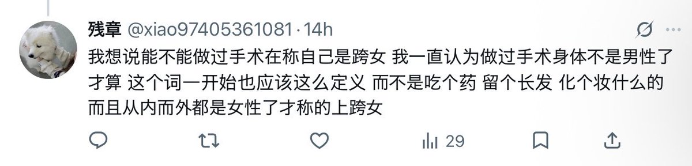

amber
@amber_medusozoa
@youquzhiji 这人都这样了就没有回复的必要了吧

残章
@xiao97405361081
@DaoZhong38596 @sd661008971 @luoyuha9 我刚刚看到X上男变女真实视频了
无聊至极🏳️⚧️
@youquzhiji
我真诚地问您觉得这种时候我说“我是跨女”和“我是一个生理男性但是正在接收hrt治疗”对于解答大夫这个疑问的效果上有什么区别吗？大夫都没撩我裙子就痛痛快快给我开药了，您跑来赛博撩裙子干什么？为了给我颁发一个“真跨女”认证？另外说一句，您这么没有边界感，找不到对象是有原因的。 https://t.co/6yu0q161wR https://t.co/vUmuRCoM6j